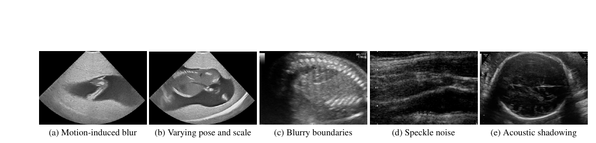
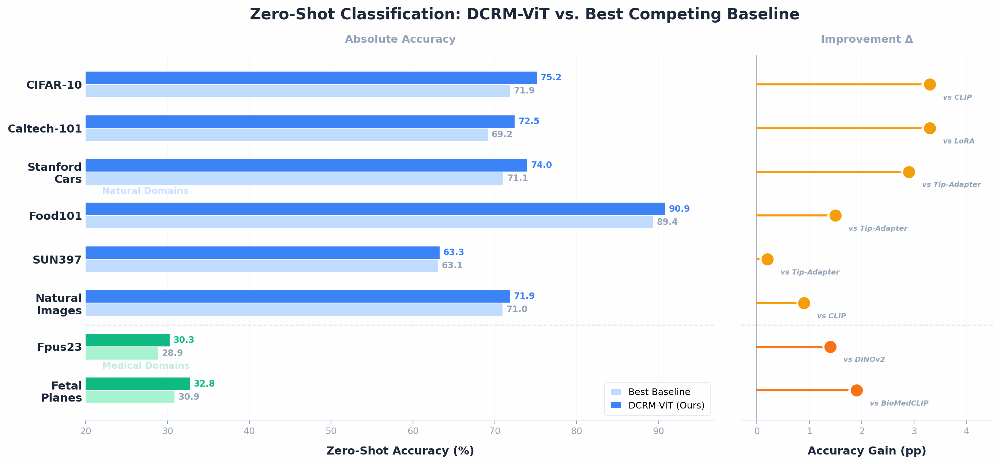

1
One frozen backbone across domains
A single transformer backbone is used for both medical and natural imagery, preserving broad visual competence while adapting to challenging medical inputs.
CVPR 2025
DCRM-ViT keeps a pre-trained ViT frozen and adapts it per sample through a domain router, a parameter synthesizer, and lightweight residual modulation blocks — aiming for robust performance across medical and natural imagery with fast, update-free inference.
Abstract
Medical imaging remains challenging due to acoustic shadows, motion blur, and indistinct boundaries, while adapting vision models to such domains often requires heavy task-specific fine-tuning and can degrade general-image capability. We propose DCRM-ViT, a domain-conditioned residual modulation framework for Vision Transformers that preserves general-vision knowledge while adapting to diverse medical and natural domains. DCRM-ViT keeps the backbone frozen and augments each block with lightweight Residual Modulation Blocks (RMBs), whose parameters are synthesized per sample by a Domain Router (DR) and a Parameter Synthesizer Network (PSN). The DR predicts soft domain weights from input features, and the PSN maps them to low-rank residuals that modulate selected projections and optionally add a domain-aware attention bias. We train the model with a bi-level optimization scheme, where an inner loop adapts RMBs to task supervision and an outer loop updates DR, PSN, and RMB initialization to improve cross-domain generalization. Across fine-grained classification (Food101, SUN397, Stanford Cars) and medical segmentation (ultrasound, CT, MRI), DCRM-ViT consistently outperforms strong baselines with modest trainable compute. Ablation studies confirm the contribution of the proposed components. Overall, DCRM-ViT achieves strong cross-domain performance with low overhead, requiring only 4.7 GFLOPs and 0.3 min/epoch.
Clinical Challenges
The paper targets a hard setting: adapting a single vision model across both medical and natural domains without sacrificing the general visual competence of the frozen backbone.

A single transformer backbone is used for both medical and natural imagery, preserving broad visual competence while adapting to challenging medical inputs.
A domain router predicts soft domain weights, and a parameter synthesizer turns those weights into low-rank residual parameters for conditional adaptation.
Gains across fine-tuning, zero-shot evaluation, cross-domain transfer, and segmentation while keeping trainable parameters and training cost low.
Method
DCRM-ViT adds small, domain-aware modules only where they are needed. The backbone remains frozen, while per-sample corrections are synthesized from the current input.
The pre-trained encoder remains frozen so the model retains general visual features and keeps inference behavior stable.
A lightweight router predicts soft domain membership from the current features rather than relying on hard task-specific branching.
The PSN converts domain information into sample-specific low-rank parameters for the residual modulation blocks.
RMBs attach task-aligned low-rank corrections to selected transformer projections, with optional domain-aware attention biasing.
An inner loop adapts task parameters, while an outer loop optimizes domain-level routing and initialization so corrections generalize.
Results
Results condense the paper tables into a web-friendly format while keeping the main quantitative takeaways easy to scan.
Best across all datasets
over second-best baseline
Best Dice on all datasets
params, 335 img/s

DCRM-ViT reports the strongest accuracy on all eight datasets in the combined fine-tuning table.
| Dataset | Best Baseline | DCRM-ViT | Gain |
|---|---|---|---|
| Fpus23 | LoRA — 63.0% | 63.4% | +0.4 pp |
| Fetal Planes | LoRA — 88.3% | 89.3% | +1.0 pp |
| CIFAR-10 | CLIP — 88.4% | 89.2% | +0.8 pp |
| Caltech-101 | CLIP — 84.1% | 85.8% | +1.7 pp |
| Natural Images | LoRA — 82.0% | 82.5% | +0.5 pp |
| Food101 | DINOv2 — 95.1% | 95.7% | +0.6 pp |
| SUN397 | DINOv2 — 80.6% | 81.3% | +0.7 pp |
| Stanford Cars | DINOv2 — 90.8% | 91.5% | +0.7 pp |
Largest zero-shot margin on Caltech-101 and CIFAR-10, with solid results on fetal data.
| Dataset | Best Baseline | DCRM-ViT | Gain |
|---|---|---|---|
| CIFAR-10 | CLIP — 71.9% | 75.2% | +3.3 pp |
| Caltech-101 | LoRA — 69.2% | 72.5% | +3.3 pp |
| Natural Images | CLIP — 71.0% | 71.9% | +0.9 pp |
| Food101 | Tip-Adapter — 89.4% | 90.9% | +1.5 pp |
| SUN397 | Tip-Adapter — 63.1% | 63.3% | +0.2 pp |
| Stanford Cars | Tip-Adapter — 71.1% | 74.0% | +2.9 pp |
| Fpus23 | DINOv2 — 28.9% | 30.3% | +1.4 pp |
| Fetal Planes | BioMedCLIP — 30.9% | 32.8% | +1.9 pp |
Best Dice score on all six reported medical segmentation datasets.
| Dataset | Strong Baseline | DCRM-ViT | Gain |
|---|---|---|---|
| BUS-UCLM | SAMUS — 0.817 | 0.862 | +0.045 |
| BUID | SAMUS — 0.774 | 0.789 | +0.015 |
| BUS-BRA | SAMUS — 0.802 | 0.834 | +0.032 |
| ACDC | SAMUS — 0.905 | 0.928 | +0.023 |
| MMWHS-CT | SAMUS — 0.861 | 0.880 | +0.019 |
| MMWHS-MRI | SAMUS — 0.831 | 0.856 | +0.025 |
The model remains competitive when trained on one regime and evaluated on another.
| Transfer Setting | Best Baseline | DCRM-ViT | Gain |
|---|---|---|---|
| Fetal → CIFAR-10 | CLIP — 60.2% | 63.7% | +3.5 pp |
| Fetal → Caltech-101 | CLIP — 62.3% | 65.8% | +3.5 pp |
| Fetal → Natural Images | CLIP — 58.9% | 61.5% | +2.6 pp |
| Natural → Fpus23 | CLIP — 55.9% | 58.4% | +2.5 pp |
| Natural → Fetal Planes | CLIP — 67.1% | 70.2% | +3.1 pp |
DCRM-ViT achieves highest throughput with fewest trainable parameters among PEFT baselines.
| Model | Trainable Params | Throughput | Time / Epoch |
|---|---|---|---|
| AdaptFormer | 4.6M | 298 img/s | 0.5 min |
| LoRA | 5.5M | 308 img/s | 0.45 min |
| DCRM-ViT | 3.3M | 335 img/s | 0.3 min |
| MAE | 86.0M | 220 img/s | 0.9 min |
| DINOv2 | 87.0M | 210 img/s | 1.0 min |
| CLIP | 123.0M | 205 img/s | 3.0 min |
Ablation
The residual modulation blocks supply the main adaptive capacity, while the domain router and bi-level training organize that capacity effectively across domains.
Removing the residual modulation block causes the strongest drop, underscoring its central role in domain-specific adaptation.
Without the parameter synthesizer network, performance drops on both fetal datasets compared with the full method.
Lower performance without bi-level meta-learning supports separating domain- and task-level optimization.
Gating, drop-path, GELU, domain-aware attention, and rescaling provide incremental gains on top of the core RMB + routing design.
Citation
@inproceedings{khan2025keep,
title = {Keep It Frozen: Domain-Routed Conditional Residual
Modulation for Multi-Domain Vision Transformers},
author = {Khan, Ufaq and Nawaz, Umair and Caputo, Massimo
and Bilal, Muhammad and Qadir, Junaid
and Khan, Muhammad Haris},
booktitle = {Proceedings of the IEEE/CVF Conference on Computer
Vision and Pattern Recognition (CVPR)},
year = {2025}
}